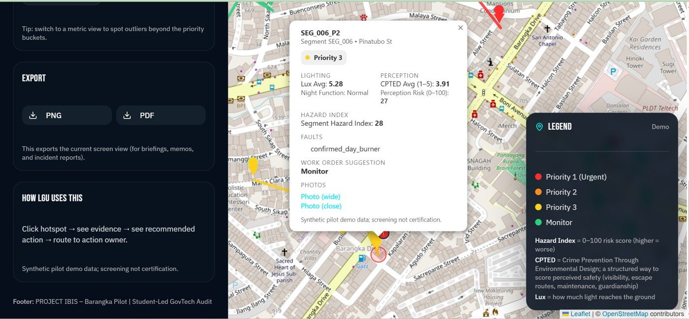
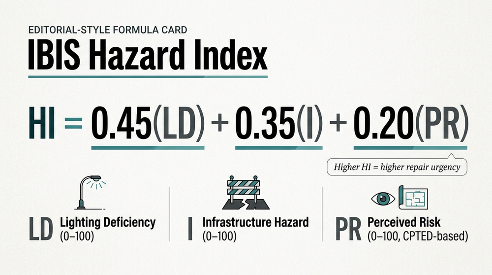
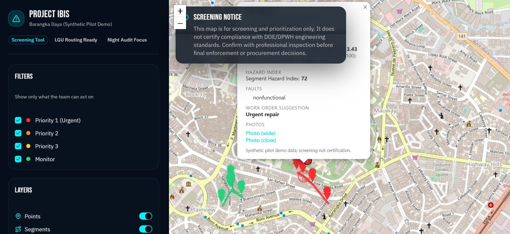

🏆 2nd Place · JA Philippines × J.P. Morgan Chase CareerConnect Capstone Finals
Part II · Infrastructure, Risk Mapping & Public Safety
Mapping the Unseen
Project IBIS (Infrastructure Blindspot Identification System): Geospatial Auditing for LGU Cost Reduction and Public Safety
4.2 lux
average illumination in problem zones — against a 20-lux DPWH adequacy target
At a Glance
Study site
Barangay Barangka Ilaya
Coverage
1.2 km high-traffic routes
Assets logged
42 lighting poles
Audit window
February 10–14, 2026
Research Summary
Project IBIS responds to a familiar but under-documented city problem: dark streets, deteriorating poles, and day-burning lamps that remain unresolved because maintenance reports are slow, fragmented, or routed to the wrong office. Conducted in Barangay Barangka Ilaya, the pilot reframed lighting failures as both a public-safety issue and a municipal-efficiency issue. By combining lux readings, GPS-tagged fault logging, and a structured hazard index, the study generated repair-ready evidence that local government units can act on more quickly.
Objectives
- Investigate the governance gaps that delay streetlight maintenance and fault reporting.
- Deploy a low-cost geospatial screening system using GPS-tagged forms and lux readings.
- Detect safety-critical failures, including exposed wiring, total outages, and day-burners.
- Route validated findings to the proper action owner using an evidence-based fault matrix.
Context & Method
Streetlights extend beyond illumination: they support night-time mobility, disaster readiness, and the safe movement of students, workers, and first responders. In Barangka Ilaya, however, maintenance has remained largely reactive because the reporting loop depends on complaints and blurred responsibility among barangay offices, the LGU engineering unit, utilities, and private associations. The study therefore positioned streetlight failure as a governance problem that also produces avoidable energy waste.
- A two-part observation cycle was completed between February 10 and 14, 2026.
- Night audits (7:00–10:00 PM) logged GPS-tagged points at roughly 20-meter intervals, averaging three replicate lux readings per location.
- Day audits (9:00–11:00 AM) verified day-burners and documented visible structural faults.
- Researchers applied an infrastructure-fault taxonomy and a 13-item CPTED safety assessment to derive a weighted hazard score.

4.2Problem-zone average (lux)
20DPWH adequacy target (lux)


Key Findings
- The pilot covered 1.2 kilometers of high-traffic pedestrian routes and logged 42 lighting assets.
- Researchers identified 11 faults, including 3 priority-1 hazards and 3 confirmed day-burners.
- Problem zones averaged only 4.2 lux against a 20-lux DPWH target, signaling severe lighting deficiency.
- The three verified day-burners alone implied approximately ₱17,310.00 in annual avoidable cost.
Implications & Recommended Actions
- Institutionalize repeat audits for high-risk and high-traffic street segments.
- Use the routing matrix so validated faults reach the proper office or asset owner without delay.
- Verify day-burners through repeated daytime checks before reporting energy waste.
- Sustain student-auditor training with barangay coordination, ethical photo protocols, and safety briefings.
1.2 kmRoutes audited
42Lighting assets
11Faults found
₱17,310Annual waste
“By combining low-cost lux auditing with a weighted hazard score, the pilot turned citizen observation into routable, repair-ready evidence for local-government action.”
Research Adviser
Mr. Franklin D. Garvida
Student Researchers
Luis Andrei G. Tiongson, Mery Grace M. Agcol, Jasmine D. Dagli, Casamena D. Nhor, Jeliane L. Rellin
Keywords streetlight maintenance; geospatial auditing; lux measurement; civic technology; energy waste; CPTED